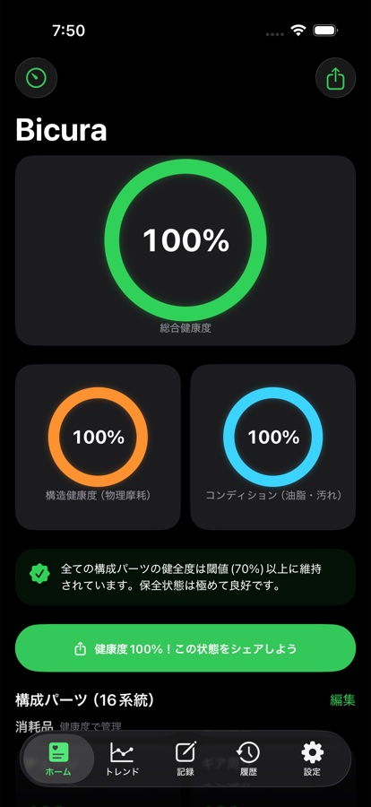
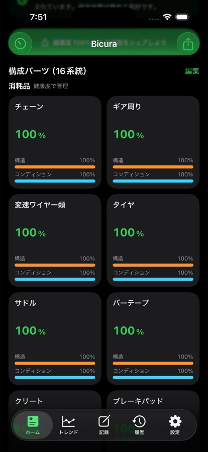
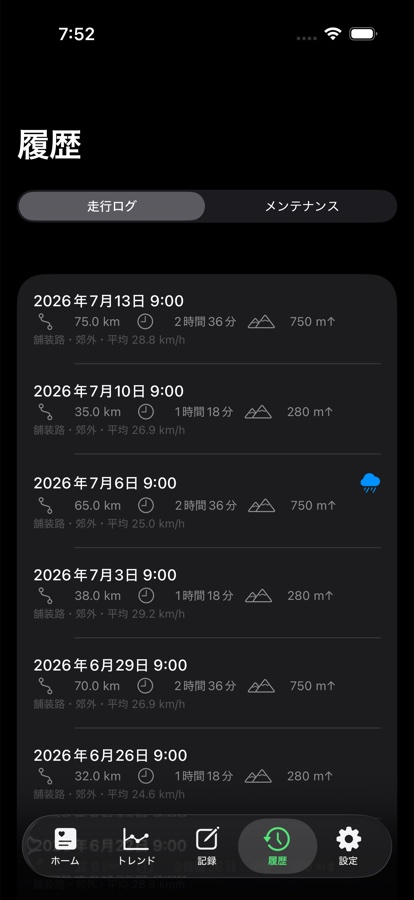
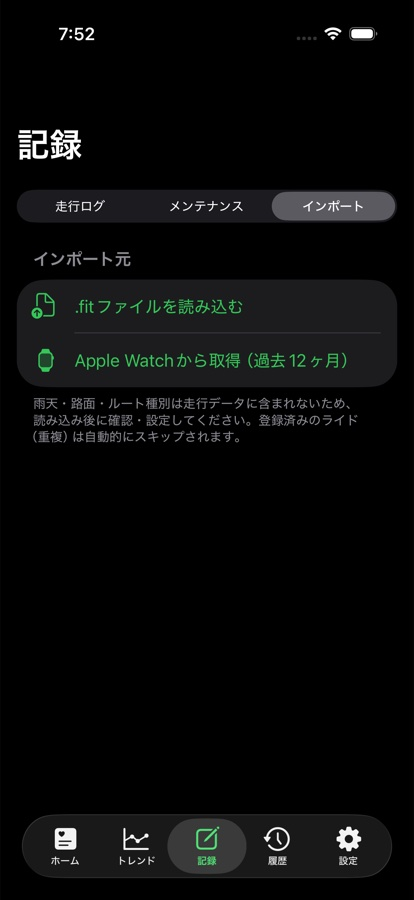
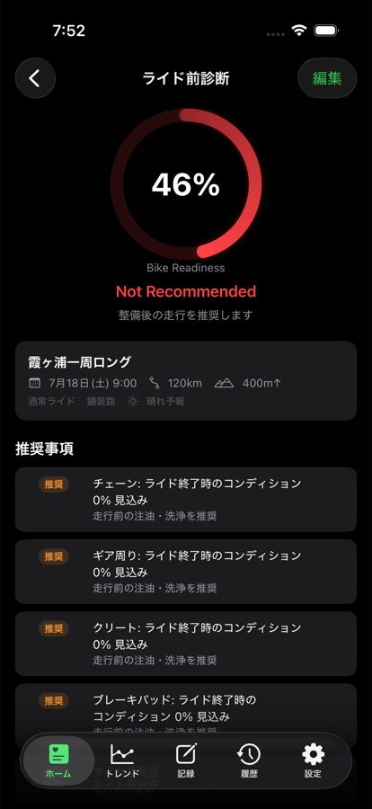

走行するほど、パーツの消耗がわかっていく。Bicuraは、自転車のパーツの健康度を自動で計算し、交換時期を教えてくれるアプリです。ロードバイク・グラベルロード・クロスバイク・マウンテンバイク・シティサイクルに対応しています。
データはすべて端末内に保存。外部サーバーへの送信は一切ありません。

チェーンやタイヤ、ブレーキパッドなど最大16系統のパーツを、構造摩耗とコンディションの2軸で自動計算。数値で「今どれくらい使えるか」がわかります。すでに乗っているバイクでも、これまでの走行距離と最近の手入れを答えるだけで、今の状態から始められます。

走行ログとメンテナンス記録を積み重ねるだけで、パーツごとの消耗が自動で更新されていきます。チェーンの手入れや洗車といったよく行う整備は、ワンタップで記録できます。過去の走行実績もひと目で振り返れます。

ヘルスケアに保存されたサイクリングのワークアウトを読み取り、走行ログとして自動反映。.fitファイルの読み込みにも対応しています。

予定しているライドを安心して走れる状態かをスコアと推奨事項で診断。劣化シミュレーション・交換時期予測・健康診断レポート・年間保全計画で、愛車の未来を先読みできます。

Bicuraは外部サーバーを持たない、ローカルファースト設計です。
走行ログ・メンテナンス記録・写真は端末の外へ送信されません。
解析SDK・広告SDKを一切使用していません。
アプリを削除すると、端末内のデータもすべて削除されます。
基本機能は無料でお使いいただけます。「過去の記録を振り返りたい」「未来の整備を先読みしたい」という方に向けて、2つの追加プランをご用意しています。
まず使い始めるための基本機能です。
買い切り。過去の記録を、もっと自分らしく。
1回購入すれば追加料金なし
サブスクリプション。愛車の未来を先読みする。
月額・年額プランからお選びいただけます
価格・購入手続きはApp Store上の表示に従います。Bicura Readinessは自動更新サブスクリプションで、購入後はApp Storeのアカウント設定からいつでも管理・解約できます。
メンテナンスのヒントやアップデート情報はXで、開発の裏側はNoteで発信しています。